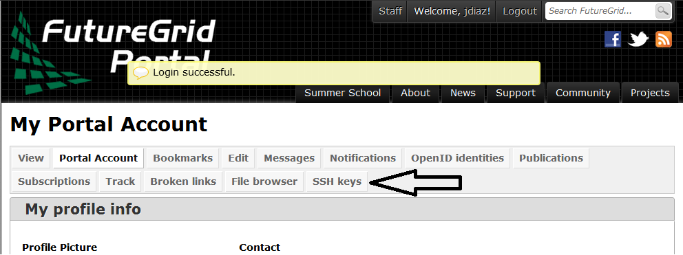
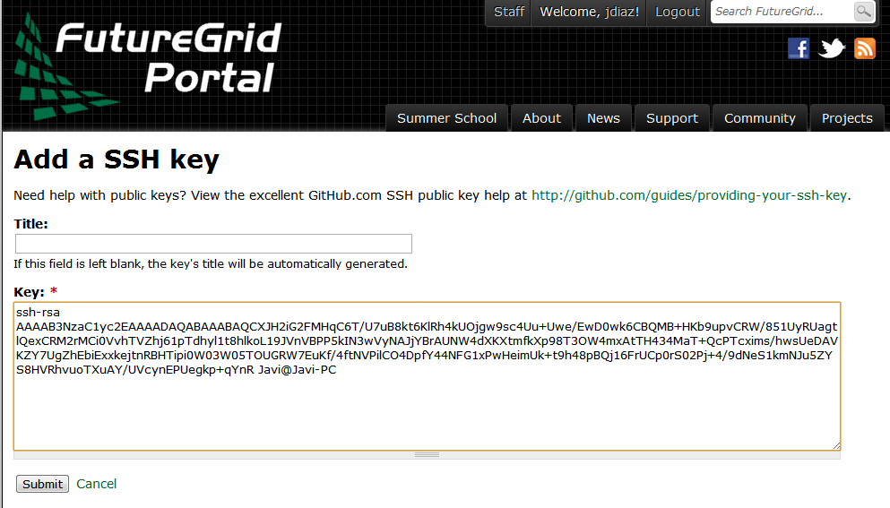

2. Using SSH keys¶
Hint

If you do not know what ssh is we recommend that you read up on it . However, the simple material presented here will help you getting started quickly on FutureGrid.
To access the various FutureGrid resources, you need to provide a public ssh key to FutureGrid. We explain how to generate a ssh key, upload it to the FutureGrid portal and log onto the resources. This manual covers both UNIX and Windows Users.
2.1. Using SSH from Windows¶
Hint
For Linux users, please skip to the section Generate a SSH key
Windows users need to have some special software to be able to use the SSH commands. If you have one that you are comfortable with and know how to setup key pairs and access the contents of your public key, please feel free to use it. The most popular software making ssh clients available to Windows users include
- cygwin
- putty
- or installing a virtualiztion software and running Linux virtual machine on your Windows OS and using that
For a real quick start we recommend you use Cygwin (Linux-like environment for Windows) because it will ease your experience with FutureGrid and provides you with a command shell that is Linux like. If you have cygwin already installed, please use it, but make sure you have ssh installed. If not, we have made it even easier for you as we prepared a special Cygwin version that is ready to use. Once you have installed it, you can follow the same instructions as given in the rest of the sections presented to access FutureGrid from ssh. You can install cygwin it with the following simple steps.
| Step | Description | Supporting Screenshot |
|---|---|---|
| Step 1 | Download Cygwin from our Portal https://portal.futuregrid.org/sites/default/files/cygwin.zip. | |
| Step 2 | Uncompress the file. |  |
| Step 3 | Execute the file the ‘Windows Batch File’ called Cygwin.bat | |
| Step 4 | You may get a warning. Click in the Run button | |
| Step 5 | You get a Linux-like terminal that will allow you to continue with this manual. Hint: When showing examples of commands, the $ symbol precedes the actual command. So, the other lines are the output obtained after executing the command. |  |
{kind=link}
2.2. Generate a SSH key¶
Hint
In case you do not want to type in al the tyme your password, please learn about ssh-agent and ssh-add.
First we must generate a ssh key with the tool ssh-keygen. This program is commonly available on most UNIX systems (this includes Cygwin if you installed the ssh module or use our pre-generated cygwin executable). It will ask you for the location and name of the new key. It will also ask you for a passphrase, which you MUST provide. We have seen advise by teachers and teaching assistants to not use passphrases: this is WRONG as it allows someone that gains access to your computer to also gain access to all resources that have the public key. Also, please use a strong passphrase to protect it appropriately. We recommend using the default location ~/.ssh/ and the default name id_rsa. If you already have a key with a passphrase, you naturally can reuse it, and skip this section. Otherwise, please continue. To generate the key, please type:
Example:
ssh-keygen -t rsa -C localname@indiana.edu
This command requires the interaction of the user. The first question is:
Enter file in which to save the key (/home/localname/.ssh/id_rsa):
We recommend you use the default. To do so, just press the enter key. In case you already have a ssh key in your machine, you can skip this whole section or use a different file name.
Hint
Please note that your localname is the username on your computer and may be different from your portalusername.
The second and third question is to protect your ssh key with a passphrase. This passphrase will protect your key because you need to type it when you want to use it. Thus, you can either type a passphrase or press enter to leave it without passphrase. To avoid security problems, you MUST chose a passphrase. Make sure to not just type return for an empty passphrase:
Enter passphrase (empty for no passphrase):
and:
Enter same passphrase again:
If executed correctly, you will see some output similar to:
Generating public/private rsa key pair.
Enter file in which to save the key (/home/localname/.ssh/id_rsa):
Enter passphrase (empty for no passphrase):
Enter same passphrase again:
Your identification has been saved in /home/localname/.ssh/id_rsa.
Your public key has been saved in /home/localname/.ssh/id_rsa.pub.
The key fingerprint is:
34:87:67:ea:c2:49:ee:c2:81:d2:10:84:b1:3e:05:59 localname@indiana.edu
The key's randomart image is::
+--[ RSA 2048]----+
|.+...Eo= . |
| ..=.o + o +o |
|O. o o +.o |
| = . . . |
+-----------------+
Once, you have generated your key, you should have them in the .ssh directory. You can chek it by
$ cat ~/.ssh/id_rsa.pub
If everything is normal, you will see something like:
ssh-rsa AAAAB3NzaC1yc2EAAAADAQABAAABAQCXJH2iG2FMHqC6T/U7uB8kt6KlRh4kUOjgw9sc4Uu+Uwe/EwD0wk6CBQMB+HKb9upvCRW/851UyRUagtlhgythkoamyi0VvhTVZhj61pTdhyl1t8hlkoL19JVnVBPP5kIN3wVyNAJjYBrAUNW4dXKXtmfkXp98T3OW4mxAtTH434MaT+QcPTcxims/hwsUeDAVKZY7UgZhEbiExxkejtnRBHTipi0W03W05TOUGRW7EuKf/4ftNVPilCO4DpfY44NFG1xPwHeimUk+t9h48pBQj16FrUCp0rS02Pj+4/9dNeS1kmNJu5ZYS8HVRhvuoTXuAY/UVcynEPUegkp+qYnR user@myemail.edu
2.3. Add or Replace Passphrase for an Already Generated Key¶
In case you need to change your change passphrase, you can simply run “ssh-keygen -p” command. Then specify the location of your current key, and input (old and) new passphrases. There is no need to re-generate keys:
ssh-keygen -p
You will see the following output once you have completed that step:
Enter file in which the key is (/home/localname/.ssh/id_rsa):
Enter old passphrase:
Key has comment '/home/localname/.ssh/id_rsa'
Enter new passphrase (empty for no passphrase):
Enter same passphrase again:
Your identification has been saved with the new passphrase.
2.4. Upload the key to the FutureGrid Portal¶
Next you need to upload the key to the portal. You must be logged into the portal to do so.
| Step | Description | Supporting Screensho |
|---|---|---|
| Step 1 | Log into the portal |  |
| Step 2 | Click in the “ssh key” button. or go directly to https://portal.futuregrid.org/my/ssh-keys |  |
| Step 3 | Click in the “add a public key” link. |  |
| Step 4 | Paste your ssh key into the box marked Key. Use a text editor to open the “id_rsa.pub”. Copy the entire contents of this file into the ssh key field as part of your profile information. Many errors are introduced by users in this step as they do not paste and copy correctly. |  |
| Step 5 | Click the submit button. IMPORTANT: Leave the Title field blank. Make sure that when you paste your key, it does not contain newlines or carriage returns that may have been introduced by incorrect pasting and copying. If so, please remove them. |
{kind=link}
{kind=link}
At this point you have uploaded your key. However you will still need to wait till all accounts have been set up to use the key, or if you did not have an account till it has been created by an administrator. Please, check your email for further updates. You can also refresh this page and see if the boxes in your account status information are all green. Than you can continue.
2.5. Testing your ssh key¶
If you have had no FutureGrid account before, you need to wait for up to two busisiness days so we can verify your identity and create the account. SO please wait. Otherwise, tseisting your new key is almost instanteneously on india. For other clusters like Hotel, it can take around 10 minutes to update the ssh keys.
To log into india simply type the usual ssh command such as:
$ ssh portalname@india.futuregrid.org
The first time you ssh into a machine you will see a message like this:
The authenticity of host 'india.futuregrid.org (149.165.148.5)' can't be established.
RSA key fingerprint is f8:96:15:b7:21:eb:64:92:6c:de:e0:79:f3:fb:86:dd.
Are you sure you want to continue connecting (yes/no)? yes
You have to type yes and press enter. Than you will be logging into india. Other FutureGrid machines can be reached in the same fashion. Just replave the name india, with the appropriate FG resource name.
2.6. Testing your ssh key for Hotel¶
After uploading your ssh key, it can take around 30 minutes to update the ssh keys of Hotel. So, if you were able to log onto India, you have set up properly your ssh key. So, after a while you will be able to log onto Hotel.
If you placed the ssh key in the default location:
$ ssh -A portalname@hotel.futuregrid.org
Hint
the presence of the -A argument above is required for Nimbus.
Hint
If you are asked for a password when trying to ssh onto
Hotel, do NOT type any password. This means that your ssh key is
not updated yet. You need to wait a bit more.